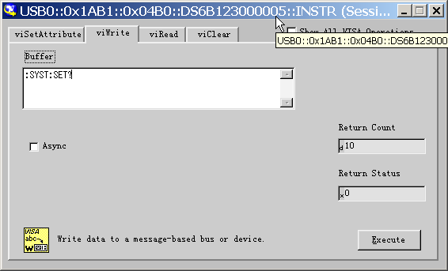
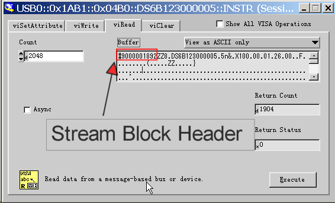

:SYSTem:SETup
命令格式
:SYSTem:SETup <setup_data>
:SYSTem:SETup?
功能描述
下载或上传系统设置文件。<setup_data>为二进制数据块。
说明
上传（:SYSTem:SETup?）时，数据流格式：
Stream Block Header ::= #NXXXXXX，用于描述数据流的长度。其中#作为数据流起始标志符，N小于等于9， 其后跟随的N个数字表示数据流的长度（字节数）。如 #9000001892，其中N为9，后面 的000001982 表示后面紧跟的数据流中包含 1992 Byte的有效数据。
下载时，直接在命令字符串后跟数据流，一次性完成发送。
举例
注意：确保有足够的缓存接收数据流，否则在读取时程序可能异常。
--------------------------------发送：------------------------------------------

--------------------------------读取：------------------------------------------
